Haze 2nd Impact
Group school project | Nov - Jan 2025 (~2m)
Key Points
> Team size: 3 | Unreal Engine 5.6 | C++ & Blueprints
> Haze 2nd Impact is a combat game heavily focused on the choreography between an humanoid and a sword.
> My responsibilities:
- C++ & Blueprint programmer, responsible for the architecture of the project.
- Plan, discuss and develop systems and features required following our Game Design documentation.
About
In this project we were 3 people and we were all game designers. It was a school project @ Isart Digital Paris done in the third year.
One of them focused more on the documentation, another on the animations and I focused on the development.
The player has a movement set, some of them can be enhanced or unlocked when using their sword. Because of the possibilities of these moves (conditions, transitions, combos, context, ...) I had to plan a robust system where planned moves could be defined in Blueprints and future movements and tweaks/patches could be implemented without slow iterations.
Tech solution for modular movements
The solution that rolled out quite well for us was a mix of State Trees, Blueprint definitions and fragments.
State Trees were used as the authority for managing the states of the Player and the Sword (one for each).
This comes really handy to control transitions between states, especially when you have runtime conditions that need to be executed.
Blueprints definitions were used to define a Player/Sword movement (one BP per move).
Those Blueprint are then referenced in the State Tree to be instantiated at runtime.
And finally, in these Blueprints fragments were used to allow modular moves. Which is great for iterating and avoiding hardcoded situations.
Player State Tree
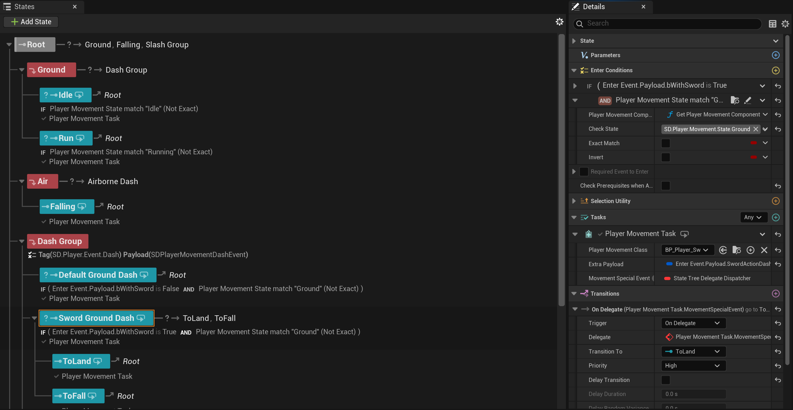Sword State Tree

It may be at first annoying to have to work with dozens of Blueprints to have a few moves, but it was mandatory for fast iterations with source control.
If the moves and the parameters were on the State Tree tasks, anytime someone wanted to work on a move, no one could work as the whole State Tree asset would have been checked out.
With multiple Blueprints, each designer can work on a set of moves without bothering others.
Player Movements
For the player movements, fragments are the main source of behaviors. Some of them work in standalone while others can be queried/query other fragments to get extra data (for example the Anim Montage fragment can query the Duration fragment to dynamically change the play rate to fit).
A few examples of fragments are:
- Editing the player speed
- Changing camera properties
- Sending a State Tree event to the sword State Tree
- Playing anim montages
- Running external Blueprints called "Scripts", mainly used for more game feel effects like camera shakes or flow logic like switching to another player move/state
- Changing gravity, locking moving direction and more
Player Dash Movement
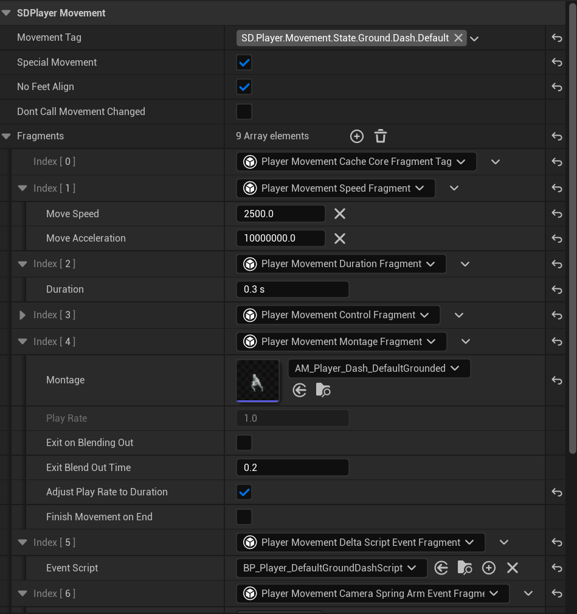Player Dash External Script Movement
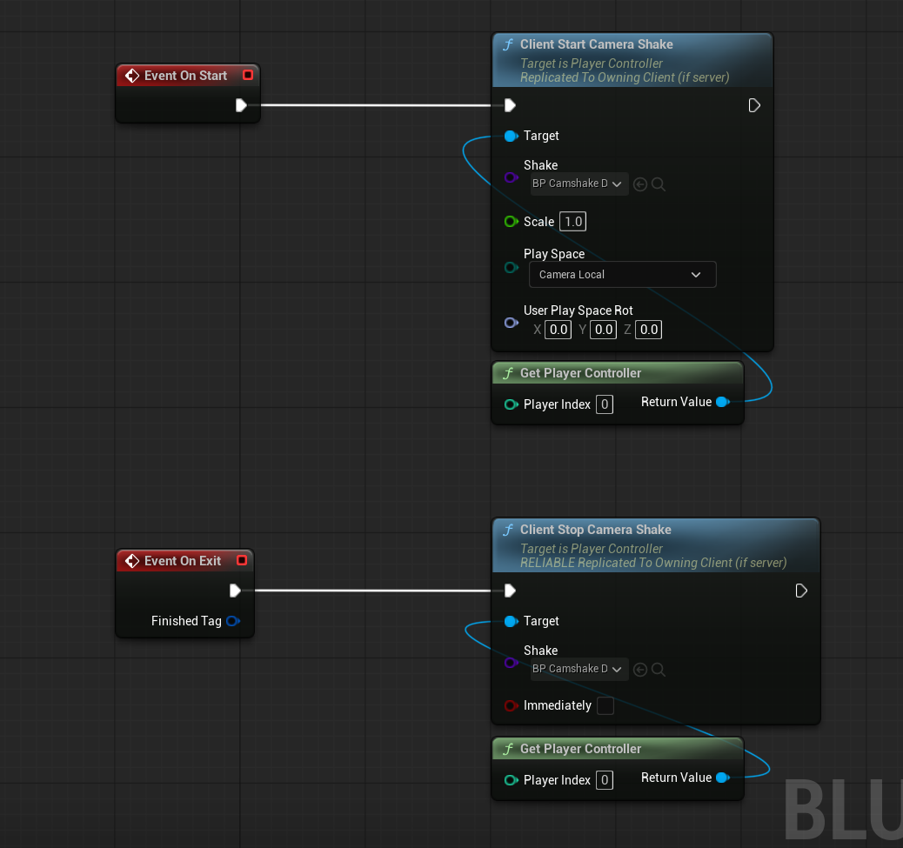Sword Movements
The sword moves using physics. For custom contextual actions such as the sword dash we use sequencers.
Sword movements have similarities with the player movement system, but they are quite different.
First off, the Sword Movement Component can run 2 types of sword movements at the same time: a Movement Behavior and a Rotation Behavior.
Sometimes a sword move will have both needed and in rare cases only one of them will be running.
These sword behavior Blueprints are based on a mix of fragments and subclasses.
The Movement and Rotation behaviors classes have a few subclasses.
For example, the movement behavior base class contains data such as the move speed, and subclasses add extra rules, for example what sequencer to play or what is the target location.
The rotation behavior is quite similar, it handles rotation speed and target look direction.
In our system sequencers are played from the movement behavior since I decided they will have authority on the rotation behavior in those cases.
Examples of sword behaviors.
Sword Follow Player Movement Behavior

Sword Follow Player Rotation Behavior
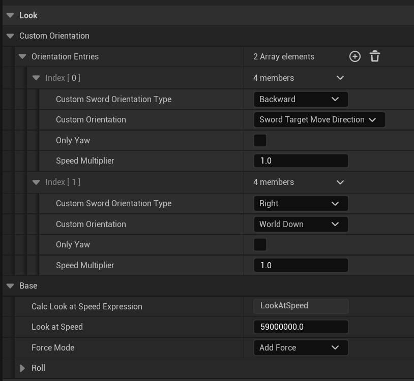Sword Slash Enhanced Movement Behavior
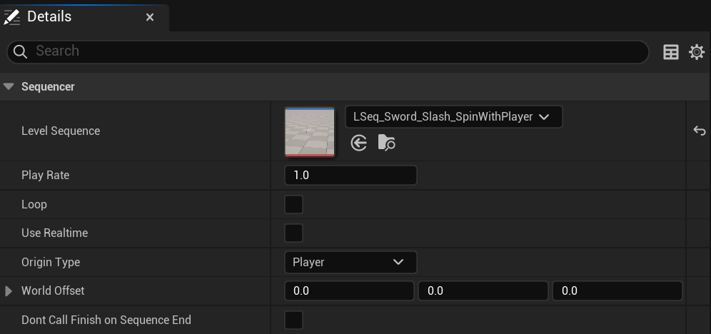
Sword behaviors also have 2 more important sections: the "Transition" and "Player Event Container". These are usually used for the movement behaviors.
The Transition section is for moves that require the sword to do something before running the behavior, for example teleportation to match the move start location for the upcoming sequencer.
The Player Event Container is for behaviors that need to send a special event to the player. For example an anim montage to run.
Sword Ground Dash Movement Behavior (Transition section)
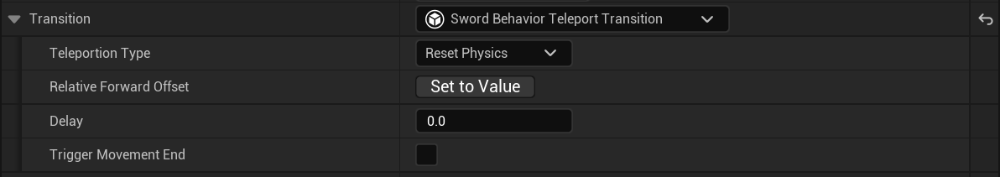Sword Slash Movement Behavior (Player Event Container)
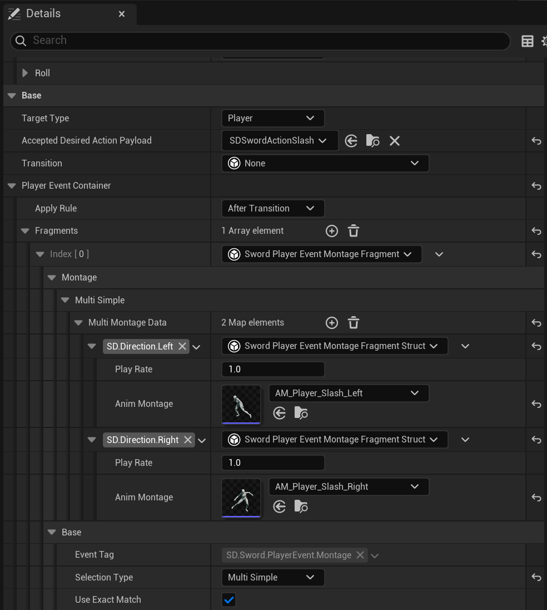Sword Recall Movement Behavior (Both used)
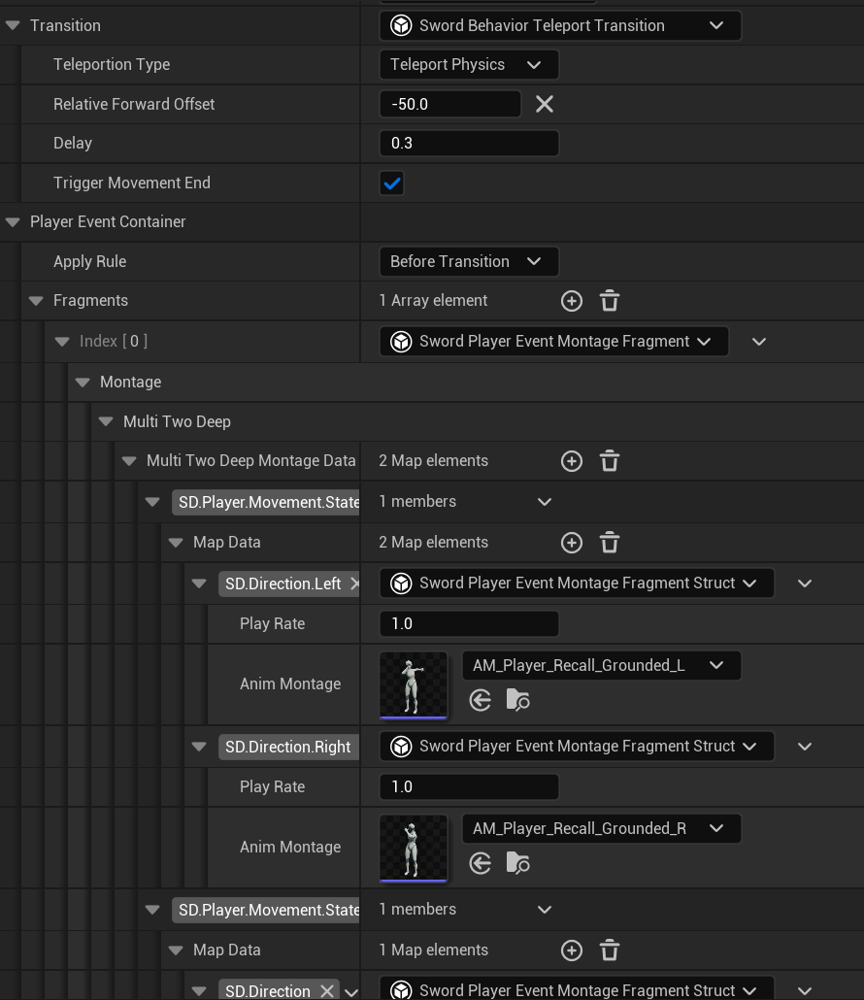Sequencer
As previously mentioned we use level sequencers (unlike the name the level sequencers we used are abstract and can be used in any level).
These sequencers use dynamic bindings to get the player character and sword to override their animations, transforms and so on to have perfectly synced moves with high precision.
To allow more customization and feedback, sequences can have events on the tracks, which can edit gameplay.
For example, some moves execute other ones at the end with dynamic branching.
Others disable move input temporarily or apply a player boost.
Sword Enhanced Slash Sequencer
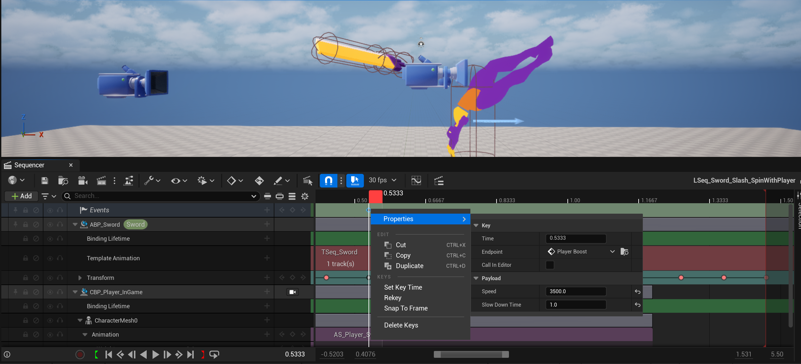Debugging
Being able to debug a complex system like this one is mandatory.
For the states, this is handled by the very nice State Tree debugger.
For the player movements and sword behaviors I created a handful of console commands. If I had more time I would have integrated the system inside the rewind debugger for an even better experience.
Console Commands
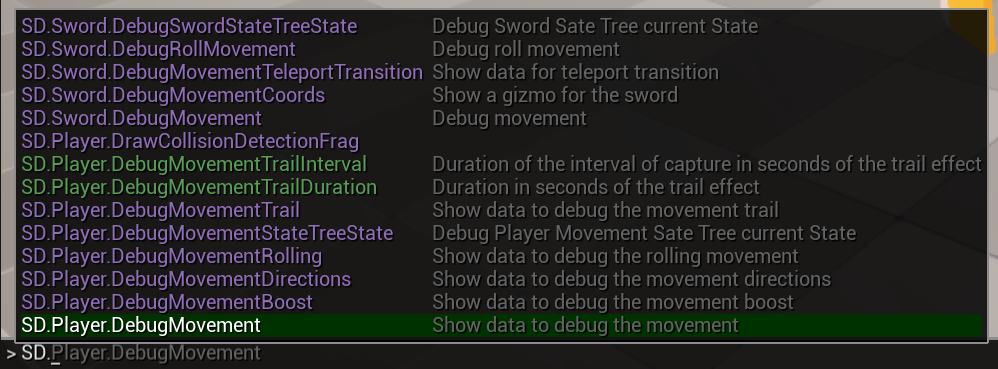Player and Sword debugging
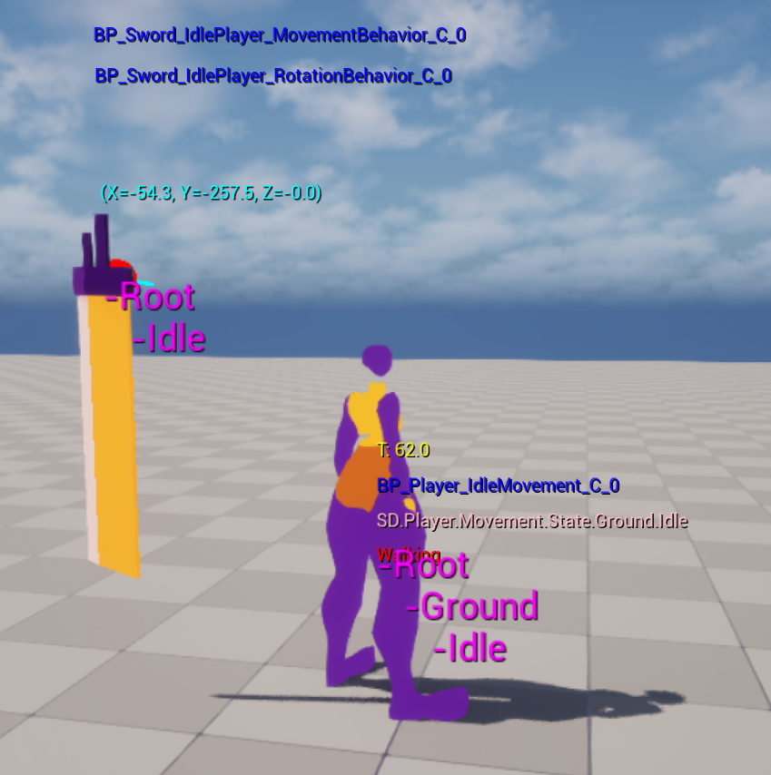
To conclude, I will say that this project was a very interesting one to work on.
The technical challenges were intersting and if I had to work again on a project like this I would keep
the same tech solution while changing the parts that weren't the best choices but had to be kept to be able to release a build.
Thanks for reading.